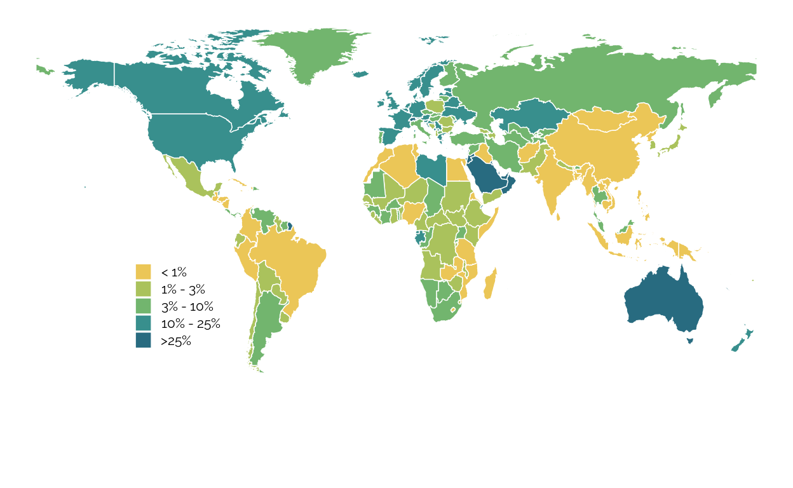
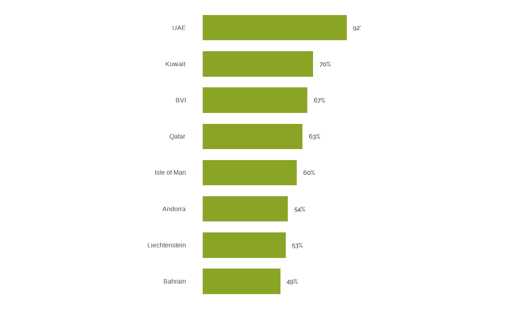
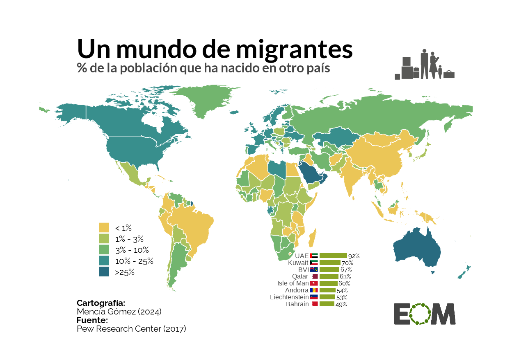
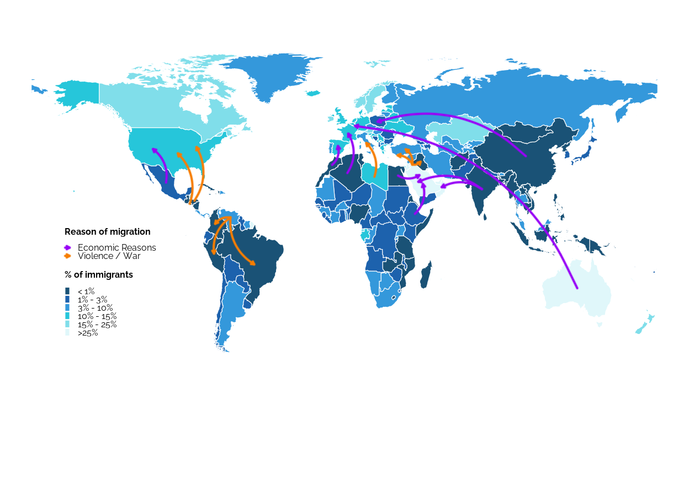

Why did I choose this plot
I wanted to replicate and improve this EOM plot where there’s represented the percentage of migrant population that each country has:
I chose this graph since I had never recreated a map before (unlike other types of plots such as barplots, boxplots, histograms, etc.). In addition, it also caught my attention because it’s not only a single type of plot, but within one plot it includes another; in this case, within the map there’s a barplot. Likewise, among the improvements I also wanted to add other types of visual representation forms such as flows.
As it’s a migration map, we can visualize which areas have the most migrations and -with the improvements I make- how and why people move between regions, revealing historical, political social or economic patterns. It is therefore a key type of plot to understand population dynamics.
To recreate and improve this plot, this document contains the following parts:
- Preparation of the data
- Recreation of the original plot
- Improvement of the plot
- Final plot
Preparation of the data
First, we open the libraries and fonts that we’ll use:
#Libraries
library(openxlsx)
library(dplyr)
library(ggplot2)
library(rworldmap)
library(sf)
library(ggforce)
library(gridExtra)
library(grid)
library(showtext)
library(png)
library(cowplot)
#Fonts
font_add_google("Lato", family = "lato")
font_add_google("Raleway", family = "raleway")
showtext_auto()Now we load the data and the base map. Migration data were obtained from the Pew Research Center and population data from the World Bank for the year 2017.
For the base map, I chose a low resolution because we don’t need very precise details as in other types of more specific maps (for example province maps)
Then we join our data and change some country names to shorten them
We create the brackets for the “% of immigrants” as in the original plot
Recreation of the original plot
We create the original map
original_map <- ggplot(datos_mapa) +
geom_sf(aes(fill = Percent_Migration_category), color = "white", linewidth = 0.25) +
scale_fill_manual(
values = c("< 1%" = "#ebc657", "1% - 3%" = "#aac25c","3% - 10%" = "#72b56e",
"10% - 25%" = "#388f8d", ">25%" = "#286b80"),
name = "% de población migrante",
na.value = "#e1e1e1",
na.translate = FALSE,
guide = guide_legend(
keywidth = 0.7, # Legend width
keyheight = 0.7, # Legend height
)
) +
theme_void() +
theme(
legend.position = c(0.17, 0.28), # Legend position
legend.justification = c(0, 0),
legend.title = element_blank(),
legend.text = element_text(size = 8 , family = "raleway"))+
coord_sf()+
theme(aspect.ratio = 0.6) # More compressed
original_map
We create the original barplot
barplot <- datos_mapa |>
arrange(desc(Percent_Migration)) |>
head(8) |> #we need 8 countries as in the original plot
ggplot(aes(x = reorder(Country, Percent_Migration), y = Percent_Migration, fill = Percent_Migration)) +
geom_bar(stat = "identity", fill="#8aa526", width = 0.7) + #width of the bars
geom_text(
aes(label = paste0(round(Percent_Migration), "%")),
hjust = 0, # Text position
nudge_y = 4, #Space between bars and percentage
size = 2, # Size of numbers in percentages
family = "raleway"
)+
coord_flip() + # Horizontal
scale_y_continuous(expand = expansion(mult = c(0.05, 0.05)))+ #Space between bars
theme_minimal() +
theme(
axis.text.x = element_blank(), # Eliminate text in axis X
axis.text.y = element_text(size = 6, margin = margin(r = 6)),
axis.title.x = element_blank(), # Eliminate the title in axis X
axis.title.y = element_blank(), # Eliminate the title in axis X
panel.grid = element_blank(),
axis.line = element_blank(),
legend.position = "none",
aspect.ratio = 1.8 # More or less compressed
)
barplot
Clarification: The letters are small so that, in the final merge with the map, they appear at the correct size (it adjusts automatically). And the margin between the Y axis and the bars is a bit wide to add the flag images.
Next, we want to add the flags, so we load them and add them
flag_eau <- readPNG(flagon::flags("ae"))
flag_kuwait <- readPNG(flagon::flags("kw"))
flag_bvi <- readPNG(flagon::flags("vg"))
flag_qatar <- readPNG(flagon::flags("qa"))
flag_isleofman <- readPNG(flagon::flags("im"))
flag_andorra <- readPNG(flagon::flags("ad"))
flag_liecht <- readPNG(flagon::flags("li"))
flag_bahrain <- readPNG(flagon::flags("bh"))Final bar plot with the flags:
graph <- barplot +
annotation_raster(flag_eau, xmin = 7.65, xmax = 8.35, ymin = -32, ymax = -6)+
annotation_raster(flag_kuwait, xmin = 6.65, xmax = 7.35, ymin = -32, ymax = -6)+
annotation_raster(flag_bvi, xmin = 5.65, xmax = 6.35, ymin = -32, ymax = -6) +
annotation_raster(flag_qatar, xmin = 4.65, xmax = 5.35, ymin = -32, ymax = -6) +
annotation_raster(flag_isleofman, xmin = 3.65, xmax = 4.35, ymin = -32, ymax = -6) +
annotation_raster(flag_andorra, xmin = 2.65, xmax = 3.35, ymin = -32, ymax = -6) +
annotation_raster(flag_liecht, xmin = 1.65, xmax = 2.35, ymin = -32, ymax = -6) +
annotation_raster(flag_bahrain, xmin = 0.65, xmax = 1.35, ymin = -32, ymax = -6) +
coord_flip(clip = "off")
graphClarification: The reason why I didn’t correct the superimposition of maps on the letters and graphics is because in the final join it reajusts automatically and fits good.
Final replication
Now we want to join the map with the barplot and add the logo, title and sources. So first we load the images for the logo and image and transform the map and barplot into a grob plot. The grob command allows us to directly manipulate graphical elements so it’s useful for combining complex plots outside of standard ggplot2 capabilities:
# We load the logo and image to add
logo <- readPNG("EOM.png")
image <- readPNG("familia2.png")
# Transform into grob
map_grob <- ggplotGrob(original_map)
graph_grob <- ggplotGrob(graph)We combine the map, barplot, source, images, and title:
plot <- ggdraw() +
draw_grob(map_grob) +
draw_grob(graph_grob, x = 0.43, y = 0.14, width = 0.35, height = 0.25) +
draw_image(logo, x = 0.77, y = 0.08, width = 0.12, height = 0.14) +
draw_image(image, x = 0.77, y = 0.97, width = 0.12, height = 0.11) +
draw_grob(
textGrob(
"Cartografía:",
x = 0.15, y = 0.19,
gp = gpar(fontface = "bold", fontsize = 8, fontfamily = "raleway"),
hjust = 0
)
) +
draw_grob(
textGrob(
"Mencía Gómez (2024)",
x = 0.15, y = 0.16,
gp = gpar(fontsize = 8, fontfamily = "raleway"),
hjust = 0
)
) +
draw_grob(
textGrob(
"Fuente:",
x = 0.15, y = 0.13,
gp = gpar(fontface = "bold", fontsize = 8, fontfamily = "raleway"),
hjust = 0
)
) +
draw_grob(
textGrob(
"Pew Research Center (2017)",
x = 0.15, y = 0.1,
gp = gpar(fontsize = 8, fontfamily = "raleway"),
hjust = 0
)
)
# We add the title
final_plot <- plot_grid(
ggdraw() +
draw_text("Un mundo de migrantes", size = 24, x = 0.15, y = 0.32, hjust = 0,
fontface = "bold", family= "lato") +
draw_text("% de la población que ha nacido en otro país", size = 12, x = 0.15,
y = 0.05, hjust = 0, fontface = "bold", family= "lato", color = "#444444"),
plot,
ncol = 1,
rel_heights = c(0.2, 0.8)
)
final_plot
Improvements of the plot
Once we have done the entire replication, we are going to improve this map, although there were some limitations and doubts that we had to resolve:
Limitations
One option for improvement was to change the scale from categorical/discrete to continuous, since we have data for this. The problem with using a continuous scale in this case is that, because most countries have low percentages of immigrants (less than 20%), the colors assigned to these countries would be very similar, since they fall in a narrow range of the scale, which would make most of the map a uniform color. Only areas with very high percentages, such as the Arab region, would be highlighted with a different color, but this would make the map monotonous and uninformative for most countries.
(Additionally, we use the Viridis color scale correctly where blues are associated with low values and yellows with the highest values, which are the ones that stand out.)
# Map with continuous scale
map_cont <- ggplot() +
geom_sf(data = datos_mapa, aes(fill = Percent_Migration), color = "white", linewidth = 0.2) +
theme_void() +
scale_fill_viridis_c(name = "% of immigrants") +
theme(
legend.position = c(0.2, 0.4),
legend.title = element_text(size = 10, face = "bold"),
legend.key.size = unit(0.15, "cm"),
legend.key.height = unit(0.25, "cm"),
legend.key.width = unit(0.25, "cm"),
legend.text = element_text(size = 8),
aspect.ratio = 0.6
) +
coord_sf()
map_contSeeing this results and how uninformative the map is with a continuous scale, I thought about the option of converting the continuous scale to logarithmic since this type of transformation allows the highest values to be compressed and the lowest values to be expanded, which helps to improve the visualization of countries with low immigration percentages without losing the distinction from those with higher percentages. When applying a logarithmic scale, the colors of countries with low immigration diversify slightly, while areas with high percentages continue to stand out, but without the map appearing uniformly tinted with a single color.
However, the problem with this comes from the interpretation and the legend: it appears in logarithmic notation or, if converted to a percentage, they appear as multiples of 10 raised to powers, which makes interpretation completely difficult. In addition, another problem arises: since in the logarithmic scale the values are not distributed linearly, there is confusion when interpreting percentages. It’s better understood with an example: if Libya and Canada are colored green on a map, this indicates that they both have more than 10% migration, but we don’t know how much more. The difference could be anywhere from, maybe, 5% to 40% or more, but the logarithmic scale does not clearly show these variations, making it difficult to know whether Canada’s migration is just a little higher than Libya’s or much higher, creating confusion when comparing these countries. In addition, we wouldn’t even be able to know Libya’s percentage of immigration: will it be 12% or will it be 45%, for example? We can see these limitations in the map below:
# Logaritmic scale into percentage scale
log_percent_scale_colors <- scale_fill_viridis_c(
trans = "log10",
na.value = "gray80",
name = "% of immigrants",
labels = function(x) scales::percent(x / max(x))
)
# Map wit logaritmic scale
map_log_percent <- ggplot() +
geom_sf(data = datos_mapa, aes(fill = Percent_Migration), color = "white", linewidth = 0.2) +
log_percent_scale_colors +
theme_void() +
theme(
legend.position = c(0.2, 0.4),
legend.title = element_text(size = 8, face = "bold"),
legend.key.size = unit(0.15, "cm"),
legend.key.height = unit(0.25, "cm"),
legend.key.width = unit(0.25, "cm"),
legend.text = element_text(size = 6),
aspect.ratio = 0.6
) +
coord_sf()
map_log_percentThe solution to all this: a discreet scale. After several tests and attempts I realized that the original map is correct in making this decision. Discrete scaling, by dividing data into fixed categories (such as “< 1%”, “1% - 3%”, etc.), allows both low and high values to be represented with different colors and more accurately interpret the percentages and the differences between them, making differences between countries to be more visible and preventing the map from looking mostly uniform, with only some areas highlighted.
Improvements
After seeing the possible limitations of the improvement attempts, these are my final proposals for the plot improvements:
Since we have justified the use of the discrete scale, all we will do is add a new category, splitting the numerical scale of migration in other categories. Specifically, I split the “10-25%” category into two categories: “10-15%” and “15-25%”. I did it since the 10-25% range is still very large and contains many countries between which there are differences that should be highlighted. This allows us to see that there are notable differences between immigration in central Europe and the north, between the US and Canada, among others.
Add another barplot for the countries with less immigrants. This would be a good idea because there is already one barplot for those with a higher percentage of migration, so it would be interesting and would give a more balanced image if we showed the same information but for countries with less migration. In this case, we are going to focus only on the first 5 countries of each category not to overload the map.
Add migratory flows (differenciating flows depending on the reason of migration). I used the “Migration Report 2017” and the information of the Mexican Government (2017-2024) to choose the most important migratory flows in 2017 on the political, social and economic sphere.
We create the flows for the map
I did it manually. First we define the flows by origin and destination.
This information was extracted from a literature review of relevant documents and reports on migratory flows in 2017, especially the Migration Report (2017).
flows <- data.frame(
Origin = c("Libya","Marruecos", "Argelia", "El Salvador",
"Honduras", "Mexico", "Ethiopia", "Venezuela",
"Siria", "Siria", "Siria", "India", "India", "Egypt",
"Australia", "Venezuela", "Venezuela", "China"),
Destination = c("Italy", "Spain", "France", "United States",
"United States1", "United States2", "Saudi Arabia",
"Colombia", "Turkey", "Jordan", "Iraq", "Saudi Arabia1",
"Oman", "Saudi Arabia2", "Europe", "Brasil", "Peru", "Europe1")
)I set the coordinates manually to specify the exact area where I wanted the arrow to reach (for some countries there are more than one pair of coordinates so that the ends of the arrows do not overlap each other)
country_coords <- data.frame(
country = c("Libya", "Marruecos", "Argelia", "El Salvador", "Honduras",
"Mexico", "Ethiopia", "Venezuela", "Siria", "Italy", "Spain",
"France", "United States", "Saudi Arabia", "Colombia", "Turkey",
"Jordan", "Iraq", "India", "Oman", "Egypt", "Australia", "Europe",
"Brasil", "Peru", "United States2", "United States1", "Saudi Arabia2",
"Saudi Arabia1", "China", "Europe1"),
lon = c(17.228, -7.092, 1.659, -88.896, -86.241,-102.5528, 40.48, -65.589,
38.996, 12.567, -3.749, 2.2137, -95.712, 45.0792, -74.2973, 35.2433,
30.5851, 43.6792, 78.96288, 55.9232, 30.8024, 133.775, 6.129,
-51.925, -75.015152, -110, -85, 43, 42.5, 104.19, 19.129), # Longitudes
lat = c(26.3351, 31.7917, 28.0339, 13.7942, 15.199, 23.6345, 9.145, 7.4238,
32.0, 41.8719, 40.463, 46.2276, 37.090, 22.8859, 4.5709, 38.9637,
36.2384, 33.2231, 20.5936, 21.5125, 26.8205, -25.2743, 49.8152,
-14.235004, -9.189967, 39.090, 40, 27, 24, 35.86, 51.8152) # Latitudes
)Then I added the coordinates (latitude and longitude) of the origin and destination countries to the flows
Finally I set the reason of migration, highlighting the most mentioned in the Migration Report (2017)
We create the map with flows
We create the new categories and we add the flows over the map with the new categories. For the colors of the arrows, I chose those that could stand out and, at the same time, would not cause problems to the color blind people.
Having included colors in the arrows for different migrations reasons, forced me to change the base colors of the map. Why? For the colors of the map I didn’t use de Viridis scale as the original because those colors prevented us from seeing the arrows of migrations. That is, given that the Viridis scale models from yellow to blue through greens and this is a great variety of colors, then when adding more colors with the migration arrows it looked overloaded and confusing with so many colors. In other words: the Viridis scale would have been perfect for the simple map, as in the original map but when adding another layer of colors, it isn’t such an appropriate scale
That’s why I chose only one color for the base colors of the map: blue, which graduated in greater or lesser intensity depending on the percentage of migration. Dark blues are for low migration rates, while light blues are for high rates as it stands out more.
#New categories
datos_mapa$Percent_Migration_category <- cut(
datos_mapa$Percent_Migration,
breaks = c(-Inf, 1, 3, 10, 15, 25, Inf),
labels = c("< 1%", "1% - 3%", "3% - 10%", "10% - 15%", "15% - 25%", ">25%"),
right = FALSE)
map_2 <- ggplot() +
geom_sf(data = datos_mapa,
aes(fill = Percent_Migration_category),
color = "white", linewidth = 0.2) +
scale_fill_manual(
values = c(
"< 1%" = "#1a5276", #e0f7fa,
"1% - 3%" = "#1d62ad", #80deea
"3% - 10%" = "#3498db", #26c6da
"10% - 15%" = "#26c6da", #3498db
"15% - 25%" = "#80deea", #1d62ad
">25%" = "#e0f7fa" #1a5276
),
name = "% of immigrants",
na.translate = FALSE,
na.value = "gray80"
) +
# Arrows
geom_curve(data = flows,
aes(x = origin_lon, y = origin_lat,
xend = dest_lon, yend = dest_lat,
color = reason),
curvature = 0.3, # Arrow curvature
arrow = arrow(length = unit(0.03, "inches"), type = "open"),
linewidth = 0.6, #Arrow line width
lineend = "round") +
geom_curve(data = flows,
aes(x = origin_lon, y = origin_lat,
xend = dest_lon, yend = dest_lat,
color = reason),
curvature = 0.3,
arrow = arrow(length = unit(0.03, "inches"), type = "open"),
linewidth = 1, #Effect line width
alpha = 0.3,
lineend = "round") +
# Reasons of migration
scale_color_manual(
values = c("Violence / War" = "#f77d00",
"Economic Reasons" = "#9800f7"),
name = "Reason of migration"
) +
# Theme and legends
theme_void() +
theme(
legend.position = c(0.16, 0.4),
legend.title = element_text(size = 6, face = "bold", family = "raleway"),
legend.key.size = unit(0.04, "cm"),
legend.key.height = unit(0.13, "cm"),
legend.key.width = unit(0.13, "cm"),
legend.box.spacing = unit(0.04, "cm"),
legend.text = element_text(size = 6, family = "raleway"),
aspect.ratio = 0.6
) +
coord_sf()
map_2
As we see, having used only 1 base grading color on the map, we can see the migration arrows more clearly. With the Viridis scale, on the contrary, was very confusing
We create the barplots
We do the same as before with the original barplot, but now for countries with less immigrants, and just taking into account 5 countries and not 8. First, we load the flag’s images.
We do again the barplots
bar_plot1 <- datos_mapa |>
arrange(desc(Percent_Migration)) |>
head(5) |>
ggplot(aes(x = reorder(Country, Percent_Migration), y = Percent_Migration, fill = Percent_Migration)) +
geom_bar(stat = "identity", fill="#3498db", width = 0.7) +
geom_text(
aes(label = paste0(format(round(Percent_Migration, 2), nsmall = 2), "%")),
hjust = 0, # Text position
nudge_y = 2, #Space between bars and percentage
size = 1.5
)+
coord_flip() + # Horizontal
labs(
title = "Countries with more immigrants",
) +
scale_y_continuous(expand = expansion(mult = c(0.1, 0.1)))+ #Space between bars
theme_minimal() +
theme(
axis.text.x = element_blank(), # Eliminate text in axis X
axis.text.y = element_text(size = 5, margin = margin(r = 5), family = "raleway"),
axis.title.x = element_blank(), # Eliminate the title in axis X
axis.title.y = element_blank(), # Eliminate the title in axis X
panel.grid = element_blank(),
axis.line = element_blank(),
legend.position = "none",
aspect.ratio = 1.8, #More or less compressed
plot.title = element_text(
size = 4.5,
face = "bold",
family = "raleway",
hjust = 0.5
))
# With the flags:
graph_1 <- bar_plot1 +
annotation_raster(flag_eau, xmin = 4.6, xmax = 5.35, ymin = -38, ymax = -7)+
annotation_raster(flag_kuwait, xmin = 3.6, xmax = 4.35, ymin = -38, ymax = -4)+
annotation_raster(flag_bvi, xmin = 2.6, xmax = 3.35, ymin = -38, ymax = -7) +
annotation_raster(flag_qatar, xmin = 1.6, xmax = 2.35, ymin = -38, ymax = -7) +
annotation_raster(flag_isleofman, xmin = 0.6, xmax = 1.35, ymin = -38, ymax = -7) +
coord_flip(clip = "off")
graph_1
Now for the countries with less immigrants:
bar_plot2 <- datos_mapa |>
arrange(Percent_Migration) |>
head(5) |>
ggplot(aes(x = reorder(Country, -Percent_Migration), y = Percent_Migration, fill = Percent_Migration)) +
geom_bar(stat = "identity", fill="#3498db", width = 0.7) +
geom_text(
aes(label = if_else(Percent_Migration < 0.01,
"<0.01%",
paste0(format(round(Percent_Migration, 2), nsmall = 2), "%"))),
hjust = 0, # Text position
nudge_y = 2, #Space between bars and percentage
size = 1.5
)+
coord_flip() + # Horizontal
labs(
title = "Countries with less immigrants",
) +
scale_y_continuous(expand = expansion(mult = c(0.1, 0.1)))+ #Space between bars
theme_minimal() +
theme(
axis.text.x = element_blank(), # Eliminate text in axis X
axis.text.y = element_text(size = 5, margin = margin(r = 5), family = "raleway"),
axis.title.x = element_blank(), # Eliminate the title in axis X
axis.title.y = element_blank(), # Eliminate the title in axis X
panel.grid = element_blank(),
axis.line = element_blank(),
legend.position = "none",
aspect.ratio = 1.8,# More or less compressed
plot.title = element_text(
size = 4.5,
face = "bold",
family = "raleway",
hjust = 0.5
)
)
# With the flags
graph_2 <- bar_plot2 +
annotation_raster(flag_china, xmin = 4.7, xmax = 5.35, ymin = -0.9, ymax = -0.2)+
annotation_raster(flag_vietnam, xmin = 3.7, xmax = 4.35, ymin = -0.9, ymax = -0.2)+
annotation_raster(flag_cuba, xmin = 2.7, xmax = 3.35, ymin = -0.9, ymax = -0.2) +
annotation_raster(flag_madagascar, xmin = 1.7, xmax = 2.35, ymin = -0.9, ymax = -0.2) +
annotation_raster(flag_indonesia, xmin = 0.7, xmax = 1.35, ymin = -0.9, ymax = -0.2) +
coord_flip(clip = "off")
graph_2Clarification: Just as before the barplots look a bit “ugly” because the flags appear on top of the text blocking it and also because the letters and numbers look tiny, but in the final plot the bar plots appear adjusted.
Final plot with improvements
Now we want to join the map with both barplots. We do the same as before:
preview= TRUE
# We load the images and create grobs
map_grob <- ggplotGrob(map_2)
graph_grob <- ggplotGrob(graph_1)
graph2_grob <- ggplotGrob(graph_2)
# We bind map + barplot1 + barplot2 + image
final_plot <- ggdraw() +
draw_grob(map_grob) +
draw_grob(graph_grob, x = 0.55, y = 0.05, width = 0.28, height = 0.28) +
draw_grob(graph2_grob, x = 0.38, y = 0.05, width = 0.28, height = 0.28) +
draw_grob(
textGrob(
"Source:",
x = 0.1, y = 0.125,
gp = gpar(fontface = "bold", fontsize = 6, fontfamily = "raleway"),
hjust = 0
)
) +
draw_grob(
textGrob(
"Pew Research Center (2017) / World Bank (2017) /",
x = 0.1, y = 0.1,
gp = gpar(fontsize = 6, fontfamily = "raleway"),
hjust = 0
)
)+
draw_grob(
textGrob(
"Migration Report (2017) / GbMx (2017)",
x = 0.1, y = 0.075,
gp = gpar(fontsize = 6, fontfamily = "raleway"),
hjust = 0
)
)
# We add the title
plot <- plot_grid(
ggdraw() +
draw_text("Global Map of Migration", size = 22, x = 0.08, y = 0.3,
hjust = 0, fontface = "bold") +
draw_text("% of immigrants and flows of migration (2017)", size = 14,
x = 0.08, y = 0.0, hjust = 0, fontface = "bold", color = "#444444"),
final_plot,
ncol = 1,
rel_heights = c(0.2, 0.8)
)
plot